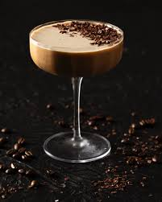

Home
Espresso Martini

Description
Enjoy this creamy espresso martini with a fantastic flavor that's not too sweet.
This specialty cocktail will be made at home using vanilla vodka and coffee liqueur for a smooth flavor.
Ingredients
- 1 cup of crushed ice
- 2 fluid ounces of coffee-flavored liqueur
- 1 fluid ounces of vanilla flavored vodka
- 1 fluid ounces of cream or milk
Steps
- Step 1
Place ice into a cocktail shaker
- Step 2
Pour coffee liqueur, vodka, and cream over ice.
- Step 3
Cover and shake until the outside of the shaker has frosted. Strain into 2 martini glasses.